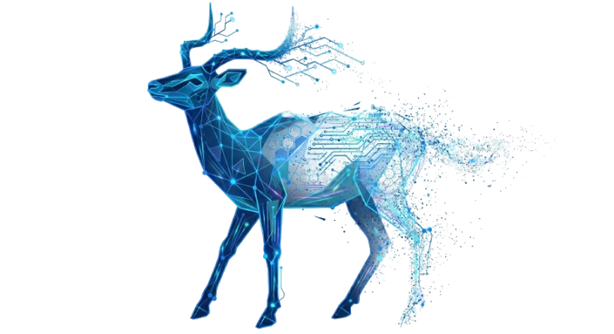

A low-poly geometric stag with circuit-traced antlers dispersing into a particle field — the legible body of compliance, the volatile edge of artificial intelligence. The mark is never tinted, recolored, or composed onto unbranded photography.
